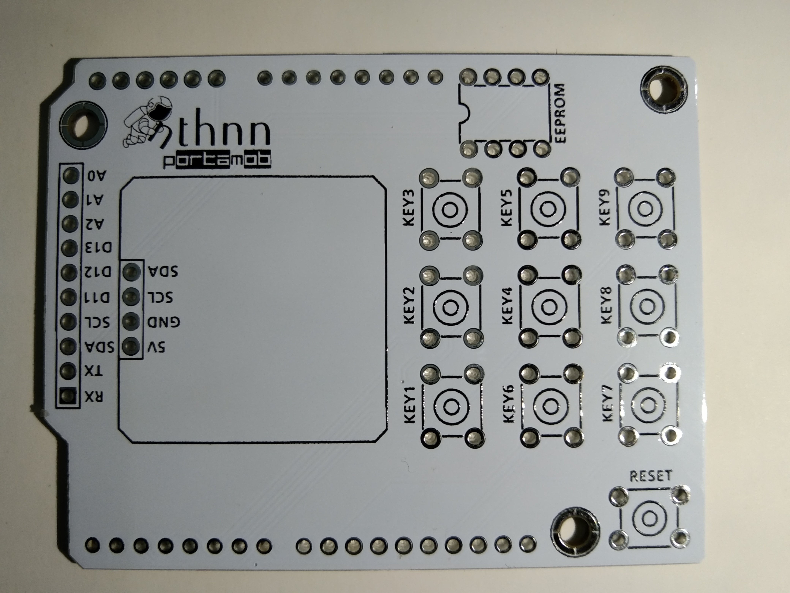
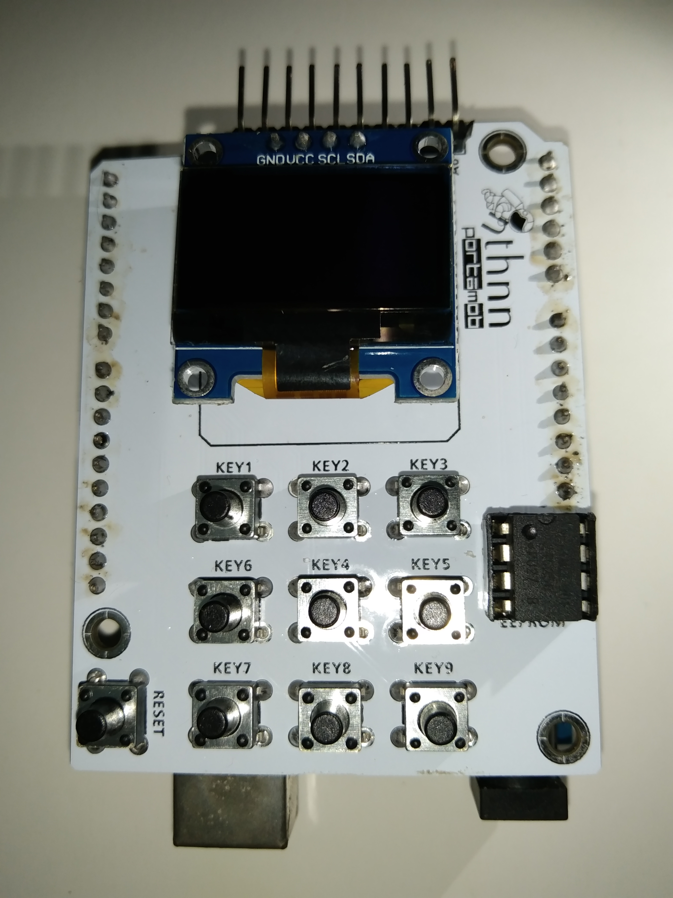

Table of Contents
PortaMob shield is an ingenious extension for the Arduino UNO platform. The shield aims to replicate the functionality of a portable mobile device, incorporating a 3x3 button grid, a monochromatic OLED display, a 24LC256 EEPROM IC, and various communication interfaces' header pins.
|  |  |
| PortaMob PCB without components. | PortaMob PCB with OLED display, EEPROM, and push buttons. |
Why PortaMob?
Design Philosophy
The development of the PortaMob shield is underpinned by a thoughtful design philosophy that prioritizes usability, adaptability, and pedagogical value. The button grid and OLED display were strategically selected to mirror the intuitive interface of conventional mobile devices. The EEPROM memory and communication interfaces amplify the shield's pragmatic applications.


Programmable Functionality and Applications
The PortaMob shield's programmable attributes transcend both hardware and software domains. By programming the push buttons, users can allocate distinct functions such as navigation, selection, or activation of predefined actions. The OLED display's potential extends to rendering textual information, dynamic menus, or even basic games. The EEPROM memory opens avenues for projects necessitating data storage, retrieval, and manipulation.
Accelerated Prototyping and Simulation
For advanced users, the PortaMob shield offers an expedited platform for prototyping and simulation. It empowers developers to conceptualize and trial mobile-inspired applications, user interfaces, and interaction models prior to transitioning to dedicated hardware or software frameworks. This capability substantially streamlines the development lifecycle and optimizes design iterations.
Key Components
- Monochromatic OLED display - A 0.96-inch OLED display serves as the visual output interface. It can display text, graphics, and basic animations, mimicking the screen of a mobile device.
- Button Grid - The shield includes a 3x3 button grid, reminiscent of traditional mobile phone keypads. Each button is programmable, allowing for a wide range of interactions and functionalities.
- EEPROM Memory - The onboard 24LC256 EEPROM IC provides non-volatile memory storage. This feature is valuable for retaining data even after power cycles, enabling storage of configuration settings, user preferences, and other critical data.
- Communication Header Pin - Header pins for UART, I2C, digital I/O, and analog inputs expand the shield's capabilities. It can interact with external devices, sensors, and peripherals through these communication interfaces.
Hardware Setup
- Download the Gerber file from this repository.
- Go to JLCPCB or any of your favorite PCB manufacturer to fabricate the PortaMob board. PS: I am not sponsored, it just happened that JLCPCB is my favorite.
- After soldering all the necessary components (header pins, push buttons, and maybe even the monochromatic display), you can now mount the board on top of Arduino UNO or Arduino Mega.
Software Setup
- Just simply look for PortaMob on the library manager of the Arduino IDE and install/download it.
- Now, click the
File > Examples > PortaMobfrom the menu bar of the Arduino IDE. - Cheers!
Schematics

License
PortaMob has two (2) license. The hardware itself (including the PCB Gerber files and the schematic diagram) is under the CERN Open Hardware Licence Version 2 - Strongly Reciprocal, while the PortaMob repository as a whole is under MIT Public License.
Both licenses have distinct characteristics and implications.
The CERN Open Hardware License (CERN OHL) is designed to facilitate the sharing and collaboration of open hardware designs. The CERN v2 Strong license places an emphasis on ensuring modifications to the original hardware design remain open and under the same license. It promotes the sharing of derivative works and requires contributors to provide proper attribution.
The MIT License is one of the most permissive open-source licenses. It allows others to use, modify, distribute, and even incorporate your code into proprietary projects. Users of MIT-licensed software typically have fewer restrictions, making it a widely adopted license for software libraries and components.